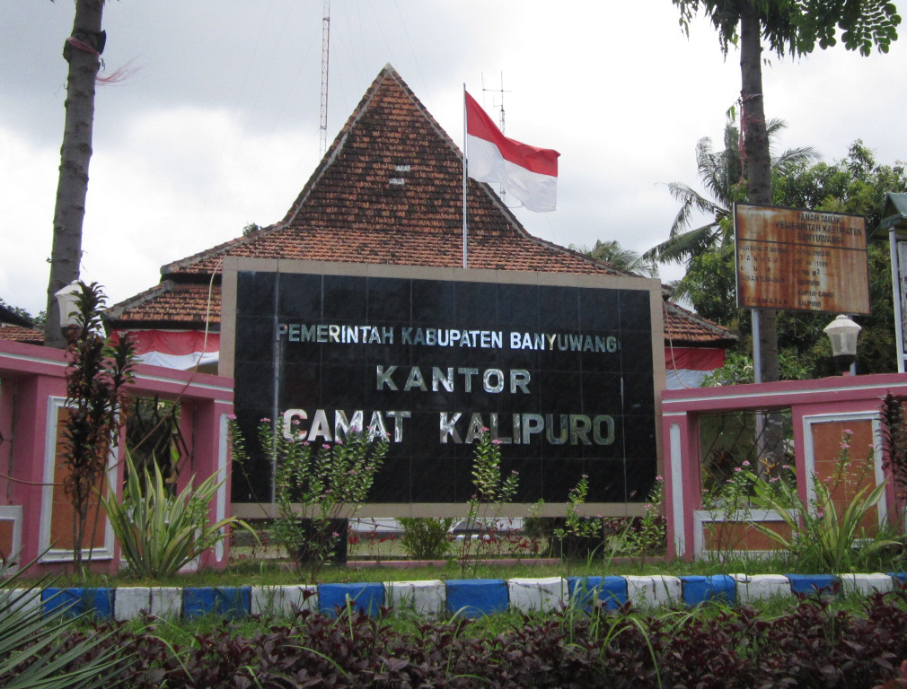

Kabupaten Banyuwangi adalah sebuah kabupaten di Provinsi Jawa Timur, Indonesia. Ibu kotanya adalah Banyuwangi. Kabupaten ini terletak di ujung paling timur pulau Jawa. Kabupaten Banyuwangi merupakan kabupaten terluas di Jawa Timur sekaligus menjadi yang terluas di Pulau Jawa, dengan luas wilayahnya yang mencapai 5.782,50 km2, atau lebih luas dari Pulau Bali (5.636,66 km2).
Kabupaten Banyuwangi terbagi menjadi 24 Kecamatan. Berikut adalah kecamatan-kecamatan di Kabupaten Banyuwangi
Bangorejo
Banyuwangi
Cluring
Gambiran
Genteng
Giri
Glagah
Glenmore
Kabat

Kalibaru

Kalipuro
Licin
Muncar
Pesanggaran
Purwoharjo

Rogojampi
Sempu
Siliragung
Singojuruh
Songgon
Srono
Tegaldlimo
Tegalsari